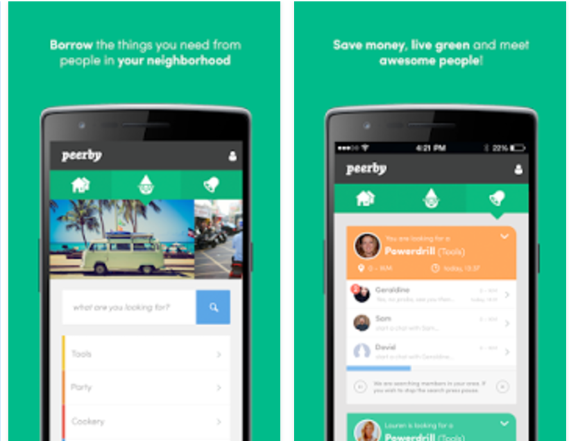
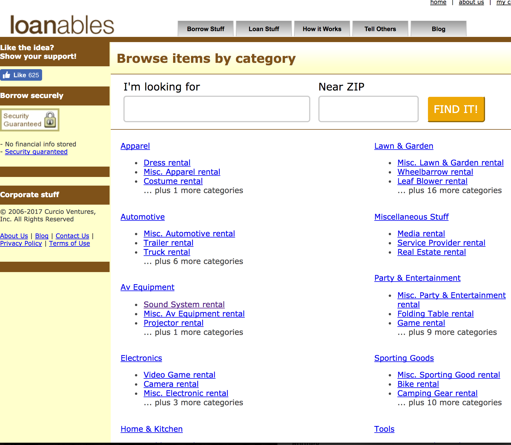

This application pretty much does the same thing I am trying to do however it is not very popular. On iOS there are 2 reviews, on android it does a bit better with about 250 reviews. Still very small and the reviews are poor so I believe there is still a market gap that needs filled. A big complaint is that there doesn't not seem to be many people using the app so not many chances to borrow items from neighbors. I think this is where marketing comes in. It is key to get a community on board for it to be adopted. Another complaint is that you have to sign in and give your information just to see who around you is using it. This may be important for saftey though because you don't want just anyone seeing what items his neighbor has. I think a better way to do this may be to 'friend' neighbors before seeing what they have. I think my idea of the app is a little more community focused so it is not quite share your items with everyone, but just a way to share with friends or at least people you somewhat trust. I think there should be an added raiting system for the item, the seller and the buyer as well. The interface of this app is very nice though.
Loanables is a website that does the same thing I am trying to do. It seems very outdated though so I dont think many people are using it. I also think a mobile app is a much better platform for this. Here there is no rating system or even a good way to see who you are giving to or renting from. I think it is important to connect to facebook because if you can see someones facebook profile than you can verify who they are and it provides security so no one is going to steal the object. I also think an important thing is to have a credit card connected so if you steal the item your card is charged automatically.
